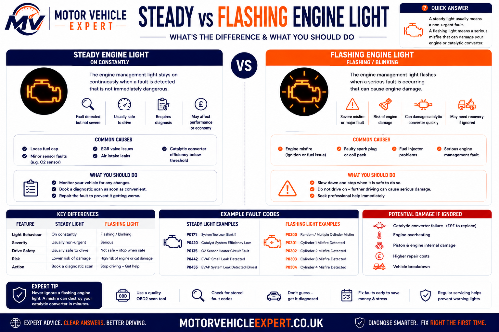
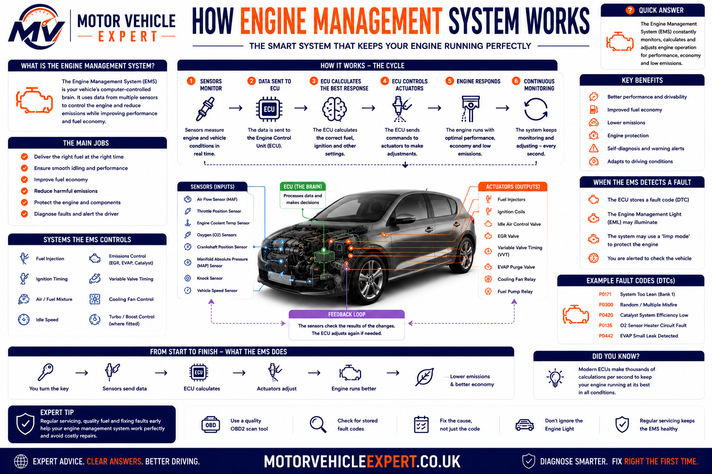
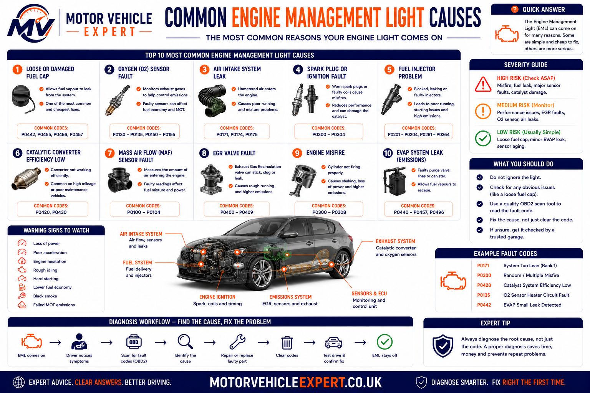
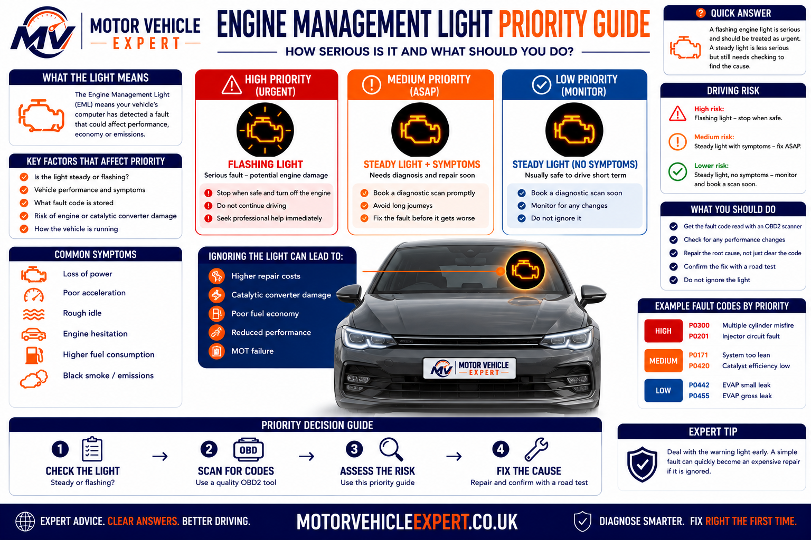
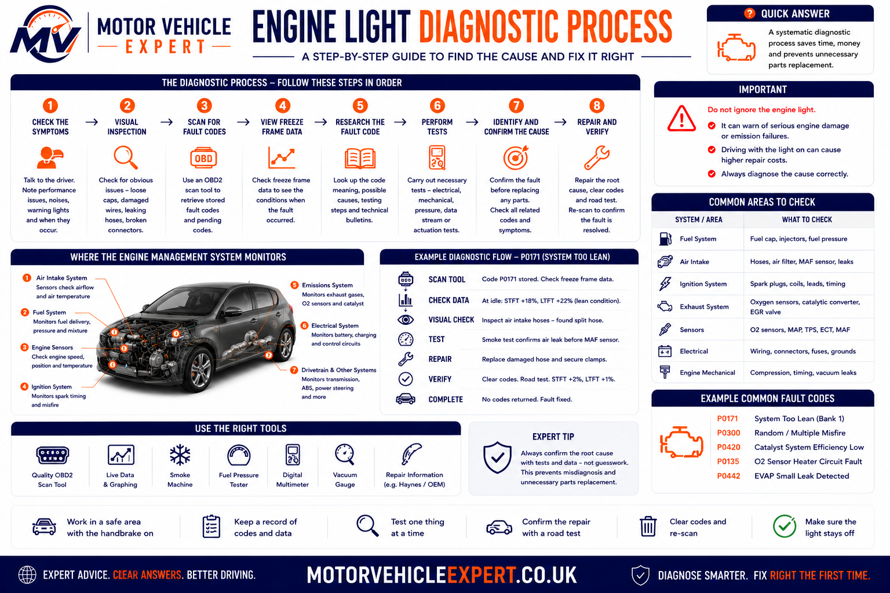

What Should You Do When the Engine Management Light Comes On?
First, check whether the light is steady or flashing and pay attention to how the vehicle is running. A steady amber light with no serious symptoms normally means the car needs prompt diagnosis. A flashing light or warning accompanied by severe misfire, smoke, overheating, fuel smell or sudden power loss requires much faster action.
Record any symptoms, scan the vehicle for stored and pending fault codes, preserve freeze-frame information and test the affected system before replacing components. The warning light identifies that a fault has been detected; it does not prove which part has failed.
Vehicle Drives Normally
Avoid ignoring the warning. Arrange a diagnostic scan before a minor sensor or emissions fault develops into a larger repair.
Misfire Damage Risk
Reduce speed and engine load. A severe misfire may send unburned fuel into the catalytic converter and cause rapid overheating.
Possible Limp Mode
The ECU may restrict performance to protect the engine, turbocharger, transmission or emissions system from further damage.
Fault May Still Be Present
A warning that returns after clearing suggests the monitor has detected the same abnormal condition again.
| Warning-light situation | Likely urgency | Recommended response |
|---|---|---|
| Steady amber light with normal engine operation | Moderate | Drive gently if necessary and arrange diagnosis promptly |
| Steady light with reduced power or limp mode | Medium–high | Avoid heavy acceleration and arrange inspection as soon as possible |
| Flashing light with rough running or shaking | High | Reduce load immediately and stop safely to prevent catalyst damage |
| Warning light with overheating, smoke or fuel leakage | Critical | Stop the engine safely and arrange recovery or urgent professional assessment |
| Light cleared but returns after driving | Fault remains unresolved | Preserve the new code data and diagnose the underlying cause |
A flashing engine management light commonly indicates a severe active misfire or another condition that may damage the catalytic converter. Reduce throttle, avoid high engine speed and stop safely if the engine continues to run badly.
Use the Motor Vehicle Expert Diagnostic App to organise warning-light symptoms, or open the Fault Codes Explained hub to search the live OBD code library.
Use the Diagnostic App to Organise the Warning and Symptoms
The engine management light can appear with many different symptoms, including rough running, hesitation, power loss, smoke, poor starting, high fuel consumption or limp mode. The Motor Vehicle Expert Diagnostic App helps drivers organise the warning light, symptoms and likely system areas before speaking to a garage.
The app does not replace a physical inspection or professional testing. Its purpose is to help you describe the problem clearly, recognise urgent warning signs and understand which diagnostic questions should be asked next.
1. Select the Warning
Identify whether the engine light is steady, flashing or accompanied by another dashboard warning.
2. Add the Symptoms
Record power loss, rough idle, smoke, hesitation, poor starting, unusual noises or limp mode.
3. Review the Priority
Understand whether careful short-term driving may be possible or whether the vehicle should be stopped.
4. Plan the Next Check
Use the results to decide whether a fault-code scan, recovery, garage inspection or specialist diagnosis is appropriate.
Engine Light Only
A steady light without symptoms may indicate an emissions, sensor, EVAP or intermittent fault that still needs diagnosis.
Light With Power Loss
Reduced performance can point towards limp mode, boost control, airflow, fuelling, DPF, EGR or throttle faults.
Flashing Light or Severe Misfire
A flashing light with shaking or rough running can indicate an active fault capable of damaging the catalytic converter.
Stop safely if the engine is overheating, oil pressure is low, fuel is leaking, the vehicle is producing heavy smoke, the engine is knocking or the light is flashing while the engine runs badly.
What an Engine Management Light Means in Real Diagnosis
In workshop diagnosis, the engine management light is treated as a notification that the ECU has detected a problem, not as confirmation that one particular component has failed. The same warning light can be triggered by a loose connector, split intake hose, weak ignition coil, incorrect sensor reading, fuel-pressure problem, turbo-control fault or internal engine issue.
The warning light can also be secondary to another problem. A cylinder misfire may later create catalyst-efficiency codes. A weak battery can produce throttle, communication and sensor-reference faults. A split boost pipe can produce underboost, airflow and mixture codes at the same time.
The strongest diagnosis explains the warning light, the driver’s symptoms, the stored codes, the freeze-frame conditions and the direct test results together. Replacing the first component named in a code description often leads to unnecessary cost.
Light On but Vehicle Drives Normally
An EVAP leak, oxygen-sensor heater fault or intermittent sensor issue may illuminate the light without creating an obvious driving symptom.
Light With Rough Running
Ignition coils, spark plugs, injectors, compression loss, air leaks and timing faults must all be considered during misfire diagnosis.
Light With Reduced Power
Boost, throttle, DPF, EGR, airflow and transmission-related faults can cause the control system to restrict performance.
Light After Battery Problems
Low voltage during starting can produce several unrelated-looking codes across engine, steering, body and transmission systems.
Light After Servicing
Disconnected sensors, loose intake pipes, disturbed wiring, incorrect filters or an air leak may appear shortly after maintenance.
Light Returns After Clearing
The diagnostic monitor has detected that the original abnormal condition remains or has occurred again.
The useful question is not simply “How do I switch the light off?” It is “What caused the control module to illuminate it, and what evidence confirms the correct repair?”
What Does the Engine Management Light Mean?
The engine management light is illuminated when the engine control system detects a fault that may affect engine operation, exhaust emissions or the electronic control of a related component. It is commonly amber and shaped like an engine, although the exact symbol can vary between manufacturers.
The warning is also known as the check-engine light or malfunction indicator lamp. It is controlled by the engine ECU or another powertrain control module after a monitored fault meets the programmed conditions for illumination.
Some faults illuminate the light immediately. Others first create a pending code and only switch the light on after the same diagnostic monitor fails again. The exact behaviour depends on the system, code severity and vehicle strategy.
Exhaust and Fuel Control
Oxygen sensors, catalyst monitoring, fuel mixture, EVAP, EGR and DPF systems can all trigger the warning.
Ignition and Combustion
Misfires, injector faults, ignition problems and incorrect timing can affect combustion and emissions.
Intake and Turbo Systems
Airflow, manifold pressure, throttle, turbo boost and vacuum-control faults may produce warning lights and limp mode.
Circuits and Communication
Wiring faults, low voltage, sensor-reference problems and lost module communication may also illuminate the warning.
| What the light tells you | What it does not prove | What should happen next |
|---|---|---|
| A monitored engine or emissions fault has been detected | That the engine itself has suffered internal failure | Scan all relevant modules and record the codes |
| The fault met the vehicle’s warning-light criteria | That the problem is equally serious on every vehicle | Assess light behaviour, symptoms and code status |
| Further diagnosis is required | That the named sensor or component must be replaced | Review freeze frame, live data and direct test results |
| Emissions or driveability may be affected | That careful short-term driving is always safe | Use symptoms and warning severity to decide urgency |
Note whether the light appeared during starting, idle, acceleration, motorway driving, towing, cold weather or after servicing. These details can help reproduce the original fault conditions.
Steady vs Flashing Engine Management Light
The behaviour of the engine management light provides an important indication of urgency. A steady amber light normally means a fault has been detected and diagnosis is needed. A flashing light is generally more serious and can indicate an active fault capable of causing rapid emissions-system damage.
Warning-light behaviour must still be considered alongside the symptoms. A steady light with severe overheating or fuel leakage is more urgent than a flashing light viewed without context. Always respond to the complete vehicle condition rather than the lamp alone.
A Fault Has Been Detected
The engine or emissions control system has stored a fault that requires investigation. The car may continue to run normally, enter reduced-power mode or develop mild symptoms.
- ✓Check whether the car drives normally.
- ✓Look for power loss, smoke or unusual noise.
- ✓Arrange a diagnostic scan promptly.
- ✓Avoid unnecessary heavy acceleration.
- !Do not ignore the warning for weeks.
An Active Damaging Fault May Be Present
A flashing light commonly accompanies a severe active misfire. Unburned fuel can enter the exhaust and overheat the catalytic converter.
- !Reduce throttle and engine speed.
- !Avoid heavy load and hard acceleration.
- !Stop safely if rough running continues.
- !Do not continue a long journey.
- !Arrange urgent diagnosis or recovery.

Always consider the warning together with engine behaviour, smoke, temperature, fluid leakage, unusual noises and any additional dashboard lights.
Steady Light, No Symptoms
Careful short-term driving may be possible, but the fault should be scanned and diagnosed before it worsens or affects the MOT.
Steady Light With Limp Mode
The control system may be restricting power because boost, throttle, emissions or transmission operation is outside the safe range.
Flashing Light With Misfire
Shaking, fuel smell or severe hesitation can indicate unburned fuel entering the exhaust and overheating the catalyst.
| Light behaviour | Vehicle symptoms | Likely priority | Recommended action |
|---|---|---|---|
| Steady | No obvious symptoms | Moderate | Drive gently if necessary and arrange a diagnostic scan |
| Steady | Reduced power or poor acceleration | Medium–high | Avoid high load and arrange prompt inspection |
| Steady | Smoke, overheating or strong fuel smell | High or critical | Stop safely and investigate the accompanying symptom |
| Flashing | Rough running, shaking or misfire | Very high | Reduce load immediately and stop safely if the fault continues |
| Flashing | Severe power loss or cutting out | Critical | Stop driving and arrange recovery or urgent assessment |
Continued driving with a severe active misfire can turn an ignition or fuelling repair into an expensive catalytic-converter replacement. Reduce engine load immediately and stop safely when the vehicle continues to run badly.
Read our dedicated guides if the warning is accompanied by misfire, power loss or uncertainty about driving safety.
How the Engine-Management System Works
The engine-management system constantly monitors how the engine is operating. Sensors measure temperature, pressure, airflow, oxygen content, speed, position and electrical conditions. The engine control unit uses this information to calculate fuelling, ignition timing, turbo boost, emissions control and other operating commands.
The ECU compares actual readings with programmed expectations. When a signal becomes implausible, disappears, remains outside its permitted range or fails to respond to a control command, the ECU may record a diagnostic trouble code and illuminate the engine management light.
The warning light therefore represents the outcome of a monitoring process. It does not simply switch on whenever one sensor produces an unusual reading. Many faults must meet specific enable conditions and confirmation rules before the light appears.
1. Sensors Measure Conditions
Sensors monitor airflow, manifold pressure, oxygen content, coolant temperature, throttle position, crankshaft speed, camshaft position and other values.
2. The ECU Processes the Data
The control unit compares sensor information with calculated models, stored maps and expected operating relationships.
3. The ECU Commands Components
Injectors, ignition coils, throttle motors, boost solenoids, EGR valves, cooling fans and other actuators receive control commands.
4. Feedback Is Checked
The ECU checks whether the vehicle responds correctly and whether the measured result agrees with the commanded action.
5. A Monitor Detects a Fault
A circuit, signal, mechanical response or emissions result falls outside the programmed diagnostic limits.
6. Evidence Is Stored
The module may save a pending or confirmed fault code together with freeze-frame operating data.
7. The Light Is Illuminated
The engine management light appears when the fault meets the vehicle’s programmed warning criteria.
8. Protection May Be Applied
The ECU may limit power, substitute a default value or disable part of the system to reduce the risk of further damage.

The warning light appears only after the control system identifies an abnormal condition that meets the programmed diagnostic rules.
The ECU Needs Reliable Information
Incorrect sensor data can cause the ECU to calculate the wrong fuelling, ignition timing, boost pressure or emissions-control response.
Several Readings Are Compared
The ECU often checks whether related signals agree rather than judging one sensor value in isolation.
Commands Must Produce a Result
A throttle, EGR valve, turbo actuator or fuel-control system may be commanded to move and then monitored for the expected response.
Circuits Are Checked
Open circuits, shorts, missing supplies, poor earths and implausible voltage levels can all create engine-light faults.
Performance Can Also Be Measured
The ECU may detect insufficient boost, incorrect timing, slow warm-up, weak catalyst efficiency or an engine misfire without directly seeing the mechanical cause.
Default Values and Limp Mode
When reliable information is unavailable, the ECU may substitute a fixed value or reduce performance to keep the vehicle operating more safely.
A shared reference-voltage fault, poor engine earth or low battery voltage can disturb several sensors simultaneously and produce multiple apparently unrelated fault codes.
Control-module failure is possible, but power supplies, earths, wiring, communication circuits, sensor references and previous programming work should be checked before an ECU is condemned.
Why Does the Engine Management Light Come On?
The light comes on when a diagnostic monitor identifies a fault affecting engine control, emissions performance or the electronic operation of a related system. The monitor must normally run under suitable conditions before it can decide whether the system has passed or failed.
Some monitors operate continuously, while others require a particular engine temperature, road speed, fuel level, load or driving pattern. This explains why a warning may appear only on a motorway journey, during cold starting, after several short trips or when the engine is placed under heavy load.
Electrical Signal Is Missing or Incorrect
Broken wiring, poor connections, short circuits, missing supplies and damaged earth paths can cause high-input, low-input or open-circuit codes.
A Reading Does Not Match Expected Operation
The signal may still be present, but its value or response does not agree with engine speed, load, temperature or related sensors.
The System Cannot Reach Its Target
Insufficient boost, excessive EGR flow, slow warm-up, incorrect cam timing and poor catalyst performance are common examples.
The ECU Reaches Its Correction Limit
Air leaks, inaccurate airflow data, weak fuel pressure or leaking injectors can force excessive fuel-trim correction.
Combustion Becomes Uneven
Changes in crankshaft acceleration allow the ECU to identify random or cylinder-specific misfires.
Exhaust Performance Is Outside Limits
Oxygen-sensor response, catalyst efficiency, EVAP sealing, EGR flow and diesel after-treatment systems may all be monitored.
| Reason for illumination | What the ECU detects | Possible underlying causes | Useful next test |
|---|---|---|---|
| Circuit fault | Voltage outside the expected electrical range | Damaged wiring, poor connector, missing supply, failed sensor or poor earth | Circuit voltage, continuity and terminal checks |
| Range or performance fault | Signal exists but does not agree with expected operation | Contamination, air leak, mechanical restriction, inaccurate sensor or calibration issue | Compare live data with related values and direct measurements |
| Mixture fault | Fuel correction exceeds the programmed limit | Vacuum leak, weak fuel delivery, airflow error, injector problem or exhaust leak | Fuel-trim analysis, smoke test and fuel-pressure test |
| Misfire fault | Uneven cylinder contribution | Spark plug, ignition coil, injector, compression, air leak or timing fault | Misfire counters, ignition checks and compression testing |
| Boost fault | Actual pressure does not follow the requested target | Split hose, actuator problem, control-solenoid fault, turbo wear or exhaust restriction | Requested-versus-actual boost data and pressure-system inspection |
| Emissions-efficiency fault | Monitored exhaust performance remains below the expected threshold | Catalyst wear, misfire history, mixture fault, exhaust leak or sensor behaviour | Correct upstream faults and compare exhaust-sensor operation |
“Circuit low,” “range or performance,” “system too lean” and “efficiency below threshold” describe different diagnostic situations. They should not all be treated as a failed sensor.
Why the Warning Light May Appear Only Sometimes
A diagnostic monitor can only judge the system when its enable conditions are satisfied. If the required temperature, speed, engine load or fuel level is not reached, the monitor may remain incomplete and the warning may not return immediately after codes are cleared.
Temperature-Dependent Faults
Sensors, ignition components and air leaks may behave differently before the engine reaches normal temperature.
Acceleration and Boost Faults
Turbo underboost, fuel-pressure loss and ignition breakdown may appear only during hard acceleration or uphill driving.
Emissions Monitors
Catalyst, oxygen-sensor and EGR monitors may need stable road speed and a fully warmed engine.
EVAP-System Checks
Fuel-vapour monitors can depend on fuel level, ambient temperature and sufficient time after the vehicle is switched off.
The Warning Can Appear Quickly
Serious circuit faults, clear signal failures and severe misfires may illuminate the light during the first failed monitoring cycle.
- ✓Fault is easy for the ECU to confirm.
- ✓The abnormal signal may be continuously present.
- !The light may return almost immediately after clearing.
- !Urgent symptoms should not be ignored.
Confirmation May Take Several Journeys
Some emissions and performance faults first become pending and illuminate the warning only after the monitor fails again.
- ✓The first failure may create a pending code.
- ✓Specific driving conditions may be required.
- !A recently cleared light can hide an unresolved fault temporarily.
- !Readiness monitors may remain incomplete.
The relevant monitor may not have run again. Repair verification requires suitable driving conditions, normal live data and confirmation that no current or pending code returns.
Pending, Confirmed and Permanent Engine-Light Faults
The status attached to a fault code helps explain whether the abnormal condition has been detected once, confirmed repeatedly, remains active or is being retained as an emissions record after repair.
Pending Code
The monitor has detected a possible fault, but the conditions for full confirmation may not yet have been completed.
Stored Code
The control module has confirmed that the programmed fault criteria were met and has retained the code.
Current or Active Code
The ECU can still detect the abnormal condition while the vehicle is being tested.
Permanent Code
Certain emissions codes remain until the vehicle’s own monitor confirms that the repaired system now passes.
| Code status | What it usually means | Recommended response |
|---|---|---|
| Pending | Possible fault detected but not fully confirmed | Record the evidence and check whether the monitor fails again |
| Confirmed or stored | The programmed fault conditions were met | Diagnose the system using code data, symptoms and direct testing |
| Current or active | The abnormal condition is present now | Test the system while the fault remains active whenever safe |
| Historic | The fault occurred previously but is not currently detected | Review symptoms, repair history and whether the code returns |
| Permanent | The emissions monitor has not yet confirmed a successful repair | Correct the fault and allow the relevant self-test to complete |
A current misfire code with a flashing light requires a different response from a historic code stored after an old battery problem. Always record both the complete code and its status.
Common Engine Management Light Causes
The engine management light can be triggered by faults in ignition, fuelling, airflow, turbocharging, emissions control, engine timing, electrical circuits or sensor feedback. The same warning light appears for all of these systems, which is why the stored codes and vehicle symptoms must be assessed together.
A component named in a code description is not automatically the root cause. For example, an oxygen sensor may correctly report a lean mixture caused by an intake leak, while a boost-pressure sensor may correctly report underboost caused by a split hose.

Several codes can originate from one underlying problem. A weak battery, air leak, misfire or shared sensor-reference fault may affect multiple systems at the same time.
Spark Plugs and Ignition Coils
Worn spark plugs, weak coils, damaged leads or incorrect plug gaps can cause rough running, hesitation, misfires and a flashing warning light.
Injectors and Fuel Delivery
Restricted injectors, leaking injectors, weak fuel pressure or pump-control faults can create lean, rich or cylinder-specific misfire codes.
MAF, MAP and Intake Leaks
Incorrect airflow data, split intake pipes, vacuum leaks and blocked filters can disturb fuel mixture and throttle response.
Temperature, Position and Pressure Signals
Coolant, crankshaft, camshaft, throttle and pressure sensors can affect starting, fuelling, timing and protective strategies.
Boost Leaks and Control Faults
Split hoses, leaking intercoolers, sticking actuators, vacuum loss and control-solenoid faults can create underboost or overboost.
Oxygen Sensors and Catalytic Converter
Sensor heaters, exhaust leaks, catalyst deterioration and earlier mixture or misfire faults can illuminate the warning.
DPF, EGR and AdBlue Systems
Excessive soot loading, failed regeneration, blocked EGR passages and exhaust after-treatment faults can reduce power and increase emissions.
Crank, Cam and Variable Timing
Timing-chain stretch, incorrect belt timing, low oil pressure or variable-timing faults can create correlation and performance codes.
Battery, Alternator and Earth Faults
Low voltage, unstable charging and poor earth connections can generate multiple circuit, throttle and communication faults.
Pedal and Throttle-Body Faults
Contamination, actuator wear, position-sensor disagreement or damaged wiring can limit throttle response and trigger limp mode.
Fuel-Vapour Leaks and Valve Faults
A loose fuel cap, split vapour hose, leaking purge valve or vent-circuit fault may illuminate the light without obvious driving symptoms.
Compression and Internal Engine Faults
Valve leakage, poor compression, timing faults and oil consumption can cause misfire, mixture and catalyst-related codes.
| Fault area | Typical symptoms | Useful first checks | Common mistake |
|---|---|---|---|
| Ignition | Misfire, shaking, hesitation and flashing light | Spark plugs, coils, misfire counters and compression | Replacing coils without proving the affected cylinder |
| Fuel mixture | Poor economy, rough idle, fuel smell or lean and rich codes | Fuel trims, intake leaks, pressure and injector operation | Replacing oxygen sensors automatically |
| Airflow | Hesitation, unstable idle, stalling or reduced power | Intake hoses, air filter, MAF and MAP live data | Cleaning or replacing the MAF without checking for leaks |
| Turbocharging | Limp mode, smoke, whistle and poor acceleration | Boost hoses, actuator movement and requested-versus-actual pressure | Condemning the turbocharger from an underboost code alone |
| Emissions | Warning light, failed MOT, smoke or increased fuel use | Exhaust leaks, mixture faults, sensor response and catalyst data | Replacing the catalyst before correcting upstream faults |
| Electrical supply | Several unrelated codes or intermittent warnings | Battery condition, charging voltage and major earths | Diagnosing each code separately before checking voltage |
One air leak, voltage fault, misfire or communication problem can affect several monitored systems. Identify the likely primary fault before responding to secondary codes.
Petrol, Diesel, Turbo and Hybrid Engine-Light Causes
The basic warning-light principle is the same across different powertrains, but the systems most likely to trigger it can vary. Petrol engines rely heavily on ignition and mixture control, while diesel engines add DPF, EGR, high-pressure injection and exhaust after-treatment systems.
Turbocharged and hybrid vehicles introduce additional pressure, control and cooling systems. Diagnosis must therefore match the exact engine, fuel type, model year and control strategy.
Ignition and Mixture Faults Are Common
Petrol engine warnings frequently involve spark plugs, ignition coils, oxygen sensors, air leaks, catalytic converters and fuel-mixture control.
- ✓Ignition-coil and spark-plug faults.
- ✓Lean or rich fuel-mixture codes.
- ✓Oxygen-sensor and catalyst faults.
- ✓Vacuum and intake-air leaks.
- ✓Throttle-body and EVAP faults.
- !Severe misfires can damage the catalyst quickly.
Airflow and After-Treatment Faults Are Common
Diesel warnings often involve DPF loading, EGR operation, turbo boost, injectors, glow systems, fuel pressure and exhaust after-treatment.
- ✓DPF soot loading and failed regeneration.
- ✓EGR flow or position faults.
- ✓Turbo underboost or overboost.
- ✓Injector and fuel-rail pressure faults.
- ✓Glow-plug and emissions-sensor faults.
- !Repeated short journeys can worsen DPF problems.
Pressure Control Must Follow the ECU Target
Turbocharged petrol and diesel engines rely on hoses, pressure sensors, intercoolers, actuators and control solenoids working together.
- ✓Inspect charge-air hoses and intercooler joints.
- ✓Compare requested and actual boost.
- ✓Check actuator movement and vacuum supply.
- ✓Inspect exhaust restrictions and EGR operation.
- !Do not assume low boost means a failed turbocharger.
Petrol Engine and Hybrid Control Systems Interact
A hybrid can illuminate the engine light for conventional engine and emissions faults even when it can still move using electric power.
- ✓Petrol engine misfire and mixture faults.
- ✓Cooling-system and temperature faults.
- ✓Engine-start and synchronisation problems.
- ✓Communication between hybrid and engine modules.
- !Electric driving does not prove the engine fault is minor.
| Vehicle type | Common fault areas | Typical symptoms | Diagnostic priority |
|---|---|---|---|
| Petrol | Spark plugs, coils, oxygen sensors, intake leaks and catalyst | Misfire, hesitation, rough idle and poor economy | Check ignition, fuel trims and air leaks |
| Diesel | DPF, EGR, boost, injectors and rail pressure | Smoke, limp mode, poor acceleration and regeneration warnings | Check soot loading, boost control and fuel-pressure data |
| Turbocharged | Hoses, intercooler, actuator, pressure sensors and solenoids | Low power, whistle, smoke and intermittent limp mode | Compare target and actual pressure under load |
| Hybrid | Engine control, cooling, emissions and module communication | Engine warning, reduced hybrid operation or starting faults | Complete a manufacturer-capable full-system scan |
A basic engine-code reader may not access diesel after-treatment, hybrid-control or manufacturer-specific systems. More complex vehicles often require enhanced or brand-compatible diagnostic equipment.
Symptoms That Can Appear With the Engine Management Light
The symptoms accompanying the warning often provide more diagnostic direction than the light alone. Rough running suggests a different fault pattern from smoke, overheating, poor starting or reduced turbo performance.
Record when each symptom occurs and whether it changes with engine temperature, road speed, throttle position or load. This information helps reproduce intermittent faults and select the most useful tests.
Shaking or Rough Running
Ignition coils, spark plugs, injectors, compression, timing and localised air leaks are common areas to investigate.
Power Loss Under Acceleration
Turbo hoses, actuators, pressure sensors, DPF restriction and fuel delivery may fail only when engine load increases.
Hesitation or Flat Response
MAF, MAP, throttle, fuel pressure and intake-leak faults may cause delayed or uneven acceleration.
Rough or High Idle
Vacuum leaks, throttle contamination, PCV faults and incorrect airflow data can disturb idle control.
Difficult Starting or Cutting Out
Crank sensors, cam sensors, fuel pressure, injectors, immobiliser communication and battery voltage may be involved.
Black, Blue or White Smoke
Excess fuel, oil burning, coolant entry, turbo failure and DPF or EGR faults can alter exhaust smoke.
Poor Fuel Economy
Incorrect temperature, airflow, oxygen-sensor or fuel-mixture information can cause excessive fuel use.
Slow Warm-Up or Overheating
Thermostat, coolant sensor, fan-control and cooling-system faults can affect engine-management calculations.
Several Warning Lights Together
Low voltage, charging failure, poor earths and network communication faults may affect several modules at once.
Combustion-Fault Pattern
- !Engine shakes at idle.
- !Warning light flashes under acceleration.
- !Strong unburned-fuel smell.
- !Misfire code identifies one or more cylinders.
- !Fuel economy worsens suddenly.
Performance-Fault Pattern
- !Power disappears during acceleration.
- !Vehicle enters limp mode uphill.
- !Whistling or rushing-air noise is present.
- !Boost code returns under heavy load.
- !Smoke increases when accelerating.
| Symptom pattern | Likely system area | Useful next check |
|---|---|---|
| Rough running and flashing light | Ignition, fuelling or compression | Misfire counters, plugs, coils, injectors and compression |
| Power loss only under load | Turbo boost, fuel pressure or exhaust restriction | Road-test live data under controlled load |
| High fuel use with no obvious misfire | Temperature, airflow or oxygen-sensor information | Fuel trims and sensor plausibility checks |
| Difficult starting when hot | Crank sensor, fuel pressure or injector leakage | Hot cranking RPM and pressure-retention tests |
| Several warning lights after slow cranking | Battery, charging or earth fault | Battery load test and voltage-drop checks |
Heavy smoke, overheating, fuel leakage, severe knocking, low oil pressure or a flashing warning accompanied by violent misfiring requires urgent action regardless of the stored code.
Can You Drive With the Engine Management Light On?
Whether the vehicle can be driven depends on the behaviour of the warning light, the symptoms present and the system affected. A steady amber light with normal engine operation may allow a short, careful journey for diagnosis. A flashing light, severe misfire, overheating, smoke, fuel leakage or major power loss requires a much more cautious response.
The warning light should never be judged in isolation. A steady light accompanied by serious mechanical symptoms may be more urgent than a flashing light that disappears immediately. Always assess the complete condition of the vehicle.

When there is any doubt about safety, stop the vehicle in a suitable place and arrange professional assessment or recovery.
Steady Light and Normal Driving
The vehicle starts, idles and accelerates normally with no smoke, overheating, unusual noise or fluid leakage.
Careful short-term driving may be possibleSteady Light With Reduced Power
The vehicle may have entered limp mode because boost, throttle, emissions or transmission operation is outside the permitted range.
Avoid high load and long journeysFlashing Light With Misfire
Severe rough running or shaking may allow unburned fuel to enter the exhaust and overheat the catalytic converter.
Reduce engine load immediatelyLight With Overheating
Rising temperature, steam, coolant loss or an overheating warning can lead to cylinder-head and head-gasket damage.
Switch the engine off safelyStrong Fuel Smell or Visible Leakage
Fuel leakage, wet fuel lines or a heavy smell around the engine bay requires urgent safety assessment.
Keep away from ignition sourcesKnocking, Heavy Smoke or Oil Warning
Mechanical noise, heavy smoke or low oil pressure can indicate a fault more serious than the engine-management warning itself.
Prevent further engine damage| Warning and symptom | Typical risk | Can you continue? | Recommended action |
|---|---|---|---|
| Steady light, no symptoms | Moderate | A short careful journey may be possible | Arrange a diagnostic scan promptly |
| Steady light with mild hesitation | Medium | Only if the vehicle remains controllable | Avoid heavy acceleration and investigate soon |
| Steady light with limp mode | Medium–high | Only for a short essential journey where safe | Avoid motorways, towing and high engine load |
| Flashing light with misfire | Very high | Normal driving should not continue | Reduce load and stop safely |
| Light with overheating or steam | Critical | No | Switch off and arrange recovery |
| Light with fuel leakage or strong fuel smell | Critical | No | Stop safely and keep ignition sources away |
| Light with low oil pressure or heavy knocking | Critical | No | Stop the engine immediately |
Conditions That Support a Short Journey
- ✓The light is steady rather than flashing.
- ✓The engine starts and idles normally.
- ✓No overheating, smoke or fluid leakage is present.
- ✓Braking, steering and transmission operation remain normal.
- ✓The journey is short and avoids heavy engine load.
- !Diagnosis should still not be delayed.
Conditions Requiring Immediate Action
- !The warning light is flashing continuously.
- !The engine shakes or misfires severely.
- !Temperature rises or steam appears.
- !Fuel or oil is visibly leaking.
- !The vehicle loses power suddenly or cuts out.
- !Heavy smoke or mechanical knocking is present.
Continuing with a severe misfire, overheating, oil-pressure problem or fuel leak can turn a repairable fault into engine, catalyst or fire damage. Recovery is often cheaper than the consequences of driving on.
Engine Management Light and Limp Mode
Limp mode is a protective operating strategy used when the ECU detects a fault that could make normal engine output unreliable or damaging. The control system restricts performance so the vehicle may remain controllable while reducing stress on the engine, turbocharger, transmission or emissions system.
The vehicle may feel slow, refuse to rev freely, remain in one gear or lose turbo boost. Switching the ignition off may temporarily restore normal power, but this does not mean the fault has been repaired.
Boost Is Restricted
Underboost, overboost, actuator faults or implausible pressure data may cause the ECU to reduce turbo output.
Acceleration Is Limited
Pedal-position, throttle-actuator or sensor-correlation faults can cause restricted throttle response.
DPF or EGR Faults Reduce Power
Excessive soot loading, exhaust restriction or EGR-control faults may trigger reduced performance.
Gear Selection May Be Restricted
Transmission faults can hold one gear, limit shifting or request the engine warning light through the powertrain system.
The ECU Uses a Default Value
When a sensor reading becomes unreliable, the ECU may substitute a fixed value so the engine can continue operating.
Power Returns After Restarting
Restarting may reset the protective strategy until the monitor detects the same fault again.
| Limp-mode symptom | Possible system area | Recommended response |
|---|---|---|
| No turbo boost | Boost leak, actuator, solenoid, DPF or pressure sensor | Avoid heavy load and compare requested with actual boost |
| Engine will not rev freely | Throttle, airflow, fuel pressure or emissions protection | Scan the vehicle and inspect for supporting symptoms |
| Gearbox remains in one gear | Transmission-control or electrical fault | Scan the transmission module, not only the engine ECU |
| Normal power returns after restart | Intermittent fault or reset protective strategy | Preserve fault data before repeatedly restarting |
| Limp mode with smoke or overheating | Potential mechanical or exhaust-system damage | Stop driving and arrange urgent assessment |
Repeatedly switching the ignition off to restore power can hide the seriousness of the fault and erase the exact conditions under which it occurs. Record the scan data and diagnose the cause.
How Garages Diagnose an Engine Management Light
A professional diagnostic process does more than connect a scanner and read a code. The technician should confirm the driver’s complaint, preserve the original evidence, identify the reporting modules, inspect the vehicle and complete direct testing before recommending a repair.
The best route depends on the fault. A lean-mixture code may require fuel-trim analysis and smoke testing, while an intermittent crank-sensor fault may require waveform testing under hot-start conditions.

The code provides direction, but the root cause must be proven using the correct electrical, mechanical or emissions-system tests.
1. Confirm the Complaint
Establish when the light appeared, whether it is steady or flashing and what symptoms occur at the same time.
2. Review Vehicle History
Check recent repairs, servicing, battery problems, fuel contamination, accident damage and previous warning-light work.
3. Complete a Full-System Scan
Read engine, transmission, ABS, body and communication modules where relevant rather than scanning only one ECU.
4. Save Codes and Freeze Frame
Record current, pending, historic and permanent codes before clearing or disconnecting the battery.
5. Prioritise the Faults
Identify which code is likely primary and which may be a secondary result of voltage, misfire or another system fault.
6. Inspect the Vehicle
Look for damaged wiring, split hoses, loose connectors, fluid loss, poor earths and signs of recent repair work.
7. Analyse Live Data
Compare fuel trims, airflow, temperature, boost, sensor response and actuator commands under relevant conditions.
8. Complete Direct Testing
Use voltage, smoke, pressure, vacuum, compression or waveform tests to prove the actual failure.
9. Confirm the Root Cause
The proposed cause should explain the warning light, symptoms, code data and abnormal test results together.
10. Complete the Repair
Repair wiring, leaks, mechanical faults or failed components rather than only clearing the warning.
11. Relearn or Calibrate
Some throttle bodies, sensors, modules and emissions components require adaptation or programming.
12. Verify the Repair
Re-scan the vehicle, review live data and complete a suitable road test so the relevant monitor can run.
Information That Should Be Recorded First
- ✓All stored and pending fault codes.
- ✓The reporting control module.
- ✓Code status and complete wording.
- ✓Freeze-frame operating conditions.
- ✓Readiness-monitor status.
- ✓Warning-light and symptom behaviour.
Evidence Used to Confirm the Cause
- ✓Battery and charging-system tests.
- ✓Wiring, supply and earth measurements.
- ✓Intake, EVAP or boost smoke testing.
- ✓Fuel, oil or boost-pressure testing.
- ✓Compression or leak-down testing.
- ✓Automotive oscilloscope waveform checks.
| Diagnostic stage | Main purpose | Evidence collected | Mistake avoided |
|---|---|---|---|
| Complaint confirmation | Define the real problem | Symptoms, timing and operating conditions | Diagnosing a different issue from the one the driver experiences |
| Full scan | Identify all reporting systems | Current, pending, historic and network codes | Focusing on one code while ignoring related faults |
| Freeze-frame review | Understand when the fault occurred | RPM, temperature, load, speed, voltage and fuel trim | Testing under conditions unrelated to the original fault |
| Visual inspection | Find obvious physical causes | Leaks, damaged wiring, poor routing and loose connectors | Performing advanced tests before basic inspection |
| Live-data analysis | Compare actual system behaviour | Sensor response, calculated values and actuator commands | Replacing parts without confirming abnormal operation |
| Direct testing | Prove the root cause | Voltage, pressure, smoke, compression or waveform results | Treating the fault code as a completed diagnosis |
| Repair verification | Confirm the fault has been removed | Normal live data, completed road test and no returning code | Returning the vehicle before the repair is proven |
The most useful test does more than confirm that a fault exists. It should help distinguish between possibilities such as a failed sensor, damaged wiring, pressure loss, air leakage or internal engine condition.
The repair should be confirmed under the conditions that originally triggered the fault. The relevant monitor must complete without the warning or pending code returning.
How Fault Codes Relate to the Engine Management Light
When the engine management light comes on, the engine ECU normally stores one or more diagnostic trouble codes. These codes identify the circuit, system or operating condition that caused the control module to register a fault.
A fault code is an important starting point, but it is not a confirmed parts diagnosis. The code records what the ECU detected. It does not automatically prove whether the cause is a sensor, wiring fault, air leak, pressure problem, mechanical failure or another component elsewhere in the system.
The most useful scan includes the full code number, complete description, reporting module, status and freeze-frame information. Writing down only a shortened description such as “oxygen sensor fault” or “turbo fault” can remove important diagnostic detail.
The Fault Has Been Confirmed
The ECU has completed the relevant diagnostic check and recorded that the programmed fault conditions were met.
A Possible Fault Is Developing
The monitor has detected an abnormal condition, but the confirmation requirements may not yet be complete.
The Fault Is Present Now
The ECU can still detect the fault while the vehicle is being tested, making direct diagnosis easier.
The Monitor Must Confirm the Repair
Some emissions records remain until the vehicle completes the relevant self-test successfully.
Useful Diagnostic Direction
- ✓The system or circuit involved.
- ✓Whether the fault is pending, current or historic.
- ✓The operating conditions present when it was detected.
- ✓Whether other modules have related faults.
- ✓Which tests should be prioritised next.
The Failed Part Is Not Automatically Confirmed
- !That the named sensor must be replaced.
- !That the ECU itself has failed.
- !That a turbocharger or catalyst is defective.
- !That wiring and connectors are sound.
- !That the mechanical system is operating correctly.
| Code wording | What the ECU detected | Possible causes | Useful next step |
|---|---|---|---|
| Circuit low | Signal voltage below the expected range | Short to earth, missing supply, damaged wiring or internal sensor fault | Test circuit voltage, supply, earth and connector condition |
| Circuit high | Signal voltage above the expected range | Open circuit, short to voltage, disconnected sensor or poor earth | Check continuity, terminals and live signal voltage |
| Range or performance | Signal exists but does not agree with expected operation | Contamination, air leak, restriction, calibration issue or inaccurate sensor | Compare live data with related sensors and direct measurements |
| System too lean | The ECU has reached a high positive fuel correction | Intake leak, weak fuel pressure, airflow error, injector restriction or exhaust leak | Review fuel trims, smoke test and check fuel delivery |
| Misfire detected | Uneven crankshaft acceleration caused by incomplete combustion | Spark plug, coil, injector, compression, timing or local air leak | Check cylinder data and prove ignition, fuelling and mechanical condition |
| Efficiency below threshold | A monitored emissions system is not reaching its expected result | Catalyst wear, exhaust leak, misfire history, mixture fault or sensor behaviour | Correct upstream faults before replacing expensive emissions components |
Clearing the memory may remove freeze-frame evidence and reset emissions readiness monitors. Save the complete scan report first.
Common Fault Codes That Can Trigger the Engine Management Light
The following live Motor Vehicle Expert guides cover common codes linked to engine warning lights, emissions faults, poor running, power loss and limp mode.
P0128 — Coolant Below Regulating Temperature
The engine does not warm up as expected, commonly because of thermostat or temperature-signal problems.
P0171 — System Too Lean Bank 1
The ECU is adding excessive fuel correction because the measured mixture appears too lean.
P0172 — System Too Rich Bank 1
The ECU is removing excessive fuel because the mixture appears richer than intended.
P0234 — Turbocharger Overboost
Actual boost pressure exceeds the ECU target because of control, actuator or pressure-reference problems.
P0299 — Turbocharger Underboost
Actual boost remains below the requested level because of leakage, control or turbo-system performance issues.
P0300 — Random or Multiple Misfire
Uneven combustion is detected across multiple cylinders or without a stable cylinder pattern.
P0301 — Cylinder 1 Misfire
Cylinder one is not contributing evenly because of ignition, fuelling, compression or air-leak problems.
P0335 — Crankshaft Position Circuit
The ECU cannot rely on the crankshaft signal used to calculate engine speed and position.
P0340 — Camshaft Position Circuit
A camshaft-position circuit fault affects engine-phase, injection and timing information.
P0401 — EGR Flow Insufficient
Exhaust-gas recirculation remains below the commanded level because of blockage, valve or sensing faults.
P0420 — Catalyst Efficiency Below Threshold
Oxygen-sensor behaviour suggests that the catalytic converter is not storing oxygen as expected.
P0442 — Small EVAP Leak
A small fuel-vapour leak is detected in the sealed evaporative-emissions system.
Each dedicated guide explains the code meaning, symptoms, likely causes, diagnostic checks, driving risk and repair-cost considerations in more detail.
Why the Fault Code May Not Identify the Failed Part
Many engine-light codes describe a condition detected by a working sensor. The sensor may be reporting accurately while the actual cause is an air leak, pressure loss, blocked passage, wiring problem or mechanical fault elsewhere.
Lean Code Does Not Prove an Oxygen-Sensor Fault
Intake leakage, weak fuel delivery, inaccurate MAF data or an exhaust leak may be responsible.
Underboost Does Not Prove Turbo Failure
Split boost hoses, intercooler leakage, actuator faults, vacuum loss or exhaust restriction may reduce pressure.
Catalyst Code May Have an Upstream Cause
Misfires, rich mixture, oil consumption and exhaust leakage can damage or confuse catalyst monitoring.
Crank-Sensor Code May Be Wiring Related
Supply voltage, connector condition, wiring continuity and trigger-wheel condition must also be checked.
Slow Warm-Up Has More Than One Cause
A thermostat stuck open is common, but coolant level, temperature-sensor accuracy and fan operation also matter.
One Voltage Fault Can Affect Several Systems
A weak battery, unstable alternator or poor earth can create throttle, sensor and communication codes together.
Read the Code and Replace the Named Part
- !Ignores wiring and connectors.
- !Ignores mechanical causes and leakage.
- !May replace a working sensor.
- !Can leave the original fault unresolved.
- !Creates repeated repair bills.
Read, Analyse, Test and Verify
- ✓Record the complete scan.
- ✓Review freeze frame and live data.
- ✓Inspect wiring, hoses and connectors.
- ✓Complete direct electrical or mechanical testing.
- ✓Verify the repair under the original conditions.
Paying for suitable pressure, smoke, wiring or waveform testing can cost far less than unnecessarily replacing a turbocharger, catalytic converter, injector set or ECU.
Common Engine Management Light Diagnostic Mistakes
Most unnecessary engine-light repairs begin when the scan result is treated as the finished diagnosis. The following mistakes can waste money, erase useful evidence or allow the original fault to remain.
Clearing the Light Immediately
Erasing codes before recording them can remove freeze-frame information and reset readiness monitors.
Replacing the Named Sensor
The sensor may be reporting a genuine problem caused by wiring, leakage, pressure loss or mechanical failure.
Ignoring Battery Voltage
Low voltage can produce multiple unrelated-looking circuit and communication faults.
Scanning Only the Engine ECU
Transmission, body and network modules may contain related information needed to understand the fault.
Ignoring Freeze-Frame Conditions
A fault recorded under heavy load may not appear while the engine is idling in the workshop.
Trusting One Live-Data Value
A faulty sensor can still display a believable number. Related values and direct measurements must be compared.
Ignoring Recent Repair Work
Loose pipes, disturbed wiring and disconnected sensors often explain warnings that appear immediately after servicing.
Continuing With a Flashing Light
Severe misfire can rapidly overheat the catalytic converter and increase the final repair cost.
Skipping Repair Verification
Clearing the light without repeating the original operating conditions can leave an unresolved fault hidden temporarily.
| Situation | Incorrect response | Better diagnostic approach |
|---|---|---|
| P0171 lean code | Replace the oxygen sensor | Compare fuel trims and test for air leakage or weak fuel delivery |
| P0299 underboost | Replace the turbocharger | Inspect hoses, intercooler, actuator, vacuum supply and actual boost |
| P0420 catalyst code | Fit a catalytic converter immediately | Check misfires, fuel mixture, exhaust leaks and oil consumption first |
| Several codes after a flat battery | Diagnose every module independently | Test the battery, alternator and major earth connections first |
| Light disappears after clearing | Assume the vehicle is repaired | Complete the relevant drive cycle and check pending codes |
| Limp mode disappears after restarting | Continue driving normally | Preserve the scan data and reproduce the original conditions safely |
The light will normally return when the monitor detects the fault again. Deliberately concealing an unresolved warning is especially serious when selling a used vehicle.
Typical Engine Management Light Diagnostic and Repair Costs UK
The cost of fixing an engine management light depends on the fault behind it. A loose hose, damaged connector or worn spark plug may be relatively inexpensive, while turbocharger, catalytic-converter, injector, DPF or internal engine faults can cost substantially more.
The first charge is normally for diagnosis rather than repair. A proper assessment may include a full-system scan, freeze-frame review, live-data analysis, visual inspection and direct electrical, pressure, smoke or mechanical testing.
The figures below are broad UK planning ranges. Vehicle design, engine type, parts quality, labour rates, access difficulty and the amount of diagnostic time required can all affect the final quotation.
Basic Fault-Code Scan
Reading common engine codes and completing a brief first assessment of the warning light.
£40–£100Full Diagnostic Assessment
Code status, freeze frame, live data, visual inspection and initial system testing.
£80–£180Intake, Boost or EVAP Smoke Test
Controlled smoke testing to locate leaks that may cause lean, underboost or vapour-system codes.
£60–£150Spark Plugs or Ignition Coil
Replacement cost varies with cylinder count, plug access, coil design and parts quality.
£80–£350MAF, MAP or Temperature Sensor
Sensor replacement after wiring, supply and plausibility checks confirm the component is faulty.
£100–£350Lambda or O2 Sensor Replacement
Costs depend on sensor position, access, seized threads and whether the fault affects the heater or sensing circuit.
£150–£450Injector Diagnosis or Replacement
Petrol and diesel injector costs vary considerably, especially where coding or high-pressure system work is required.
£180–£700+ per injectorEGR Cleaning or Replacement
Cleaning may be possible in some cases, while inaccessible or electronically failed valves require replacement.
£180–£700+DPF Diagnosis, Cleaning or Replacement
Forced regeneration, professional cleaning and replacement have very different costs and must match the confirmed fault.
£100–£2,000+Boost Leak, Actuator or Turbo Repair
A split hose may be inexpensive, while actuator or complete turbocharger replacement can be significantly more costly.
£80–£2,000+Catalytic Converter Replacement
The underlying misfire, mixture or oil-consumption fault must be corrected before fitting a replacement catalyst.
£400–£1,800+Wiring, Connector or ECU Investigation
Intermittent wiring, reference-voltage, communication and module faults are normally charged by diagnostic time.
£100–£400+| Diagnostic or repair work | Typical UK planning range | What should be confirmed first | Main cost risk |
|---|---|---|---|
| Basic code scan | £40–£100 | Whether the charge includes interpretation or only code reading | Paying for a scan without receiving a diagnosis |
| Full diagnostic assessment | £80–£180 | Which modules, live data and tests are included | Additional testing time may be required |
| Spark plugs or ignition coil | £80–£350 | The affected cylinder and whether compression is sound | Replacing ignition parts when the misfire is mechanical |
| Oxygen sensor | £150–£450 | Heater circuit, wiring, fuel trims and exhaust integrity | Replacing a working sensor that reports another fault |
| EGR or DPF work | £180–£2,000+ | Soot load, pressure data, temperature sensors and root cause | Replacing the unit without correcting failed regeneration causes |
| Turbo or boost-system repair | £80–£2,000+ | Hoses, intercooler, actuator, vacuum control and actual boost | Condemning the complete turbocharger too early |
| Catalytic converter | £400–£1,800+ | Misfires, mixture faults, oil burning and exhaust leaks | New catalyst damaged by an unresolved upstream fault |
| Wiring or intermittent electrical diagnosis | £100–£400+ | Initial authorised diagnostic time and reporting process | Open-ended labour without staged approval |
What the Garage Should Explain
- ✓The initial diagnostic charge.
- ✓How much testing time is authorised.
- ✓Which modules and systems will be checked.
- ✓Whether additional work needs approval.
- ✓Whether the charge is separate from repair labour.
- ✓What evidence or report will be provided.
What Should Make You Cautious
- !A major component is recommended from the code alone.
- !No scan report or direct test result is available.
- !The cause cannot be explained clearly.
- !Several parts are proposed as a trial.
- !No repair-verification process is planned.
- !Unlimited diagnosis begins without authorisation.
The diagnostic fee pays for the time and equipment used to identify the fault. Replacement parts, labour, fluids, coding, programming and further repair work are normally quoted separately.
Agree an initial amount of diagnostic time and ask the garage to contact you with its findings before proceeding further. This supports proper investigation while keeping control of the final bill.
Will the Engine Management Light Fail an MOT?
An illuminated engine management light can result in an MOT failure where the warning indicates a malfunction of the engine emissions-control system. The vehicle may also fail if the underlying fault causes excessive exhaust emissions, visible smoke or another testable defect.
Clearing the light immediately before the test is not a reliable solution. If the fault remains, the ECU may illuminate it again once the relevant diagnostic monitor completes. Recently cleared readiness monitors can also indicate that the vehicle has not yet finished its self-checks.
Engine Light Remains Illuminated
A malfunction indicator lamp showing an emissions-related engine fault can lead to an MOT failure.
Mixture or Catalyst Fault
Misfires, rich running, catalyst faults and incorrect fuelling can increase measured exhaust emissions.
DPF, EGR or Smoke Fault
Excessive smoke, DPF malfunction and exhaust after-treatment faults can create additional MOT concerns.
Light Switched Off Before the Test
The warning can return once the monitor repeats the failed check during driving or the emissions test.
Fault Corrected and Verified
The code does not return, live data is normal and the relevant monitor completes successfully.
Diagnose Before MOT Day
Early investigation allows time for testing, parts supply, repair and a proper verification drive.
| Vehicle condition | Possible MOT outcome | Recommended action |
|---|---|---|
| Engine management light illuminated | Failure possible where it indicates an emissions-system malfunction | Scan, diagnose and repair before the test |
| Severe misfire or rich running | Warning-light and exhaust-emissions failure risk | Correct the combustion fault and assess catalyst condition |
| Diesel smoke or DPF fault | Smoke, warning-light or emissions failure possible | Diagnose soot loading, pressure sensing and regeneration failure |
| Light recently cleared | It may return before or during the test | Complete the relevant drive cycle and re-scan the vehicle |
| Repaired fault with completed monitors | Lower warning-light risk | Confirm no pending or current code remains |
Some repairs need additional testing, programming or a suitable drive cycle before the vehicle confirms that the system now passes. Early diagnosis reduces the risk of an avoidable failed test.
Should You Buy a Used Car With the Engine Management Light On?
Buying a vehicle with the engine management light illuminated carries significant uncertainty. The fault may be a relatively simple sensor or wiring problem, but it may also involve a catalytic converter, DPF, turbocharger, injector, timing system, transmission or internal engine fault.
Do not rely on statements such as “it only needs resetting” or “it is just a sensor.” Ask for the exact code, diagnostic evidence, repair invoice and proof that the warning remains off after a suitable test drive.
Historic Code With Repair Evidence
The repair is documented, the code is not current and the vehicle completes a proper road test without the warning returning.
Light Off but Monitors Incomplete
The battery may have been disconnected or codes recently cleared before the viewing.
Current or Pending Code
The vehicle has an unresolved or developing fault that should be diagnosed and priced before purchase.
Flashing Light or Severe Misfire
Active misfire can damage the catalyst and may indicate ignition, fuelling, compression or timing faults.
Turbo, DPF or Catalyst Code
These systems require proper testing because repair costs can range from a small leak to major component replacement.
Scan or Inspection Refused
Refusing an independent scan, road test or inspection prevents the buyer from assessing the true repair risk.
Evidence to Request
- ✓Full-system diagnostic scan.
- ✓Current, pending and permanent codes.
- ✓Readiness-monitor status.
- ✓Repair invoices and parts receipts.
- ✓MOT emissions and advisory history.
- ✓Cold-start and fully warmed test drive.
- ✓Second scan after the road test.
Reasons to Slow Down or Walk Away
- !The warning lamp does not illuminate during self-check.
- !The seller says it only needs clearing.
- !Several readiness monitors remain incomplete.
- !Misfire, boost, catalyst or gearbox codes remain current.
- !The engine smokes, shakes or enters limp mode.
- !No evidence supports the claimed repair.
- !An independent inspection is refused.
| Used-car situation | What it may mean | Recommended buying response | Risk level |
|---|---|---|---|
| No warning light, no codes and monitors complete | No engine-system fault is currently evident | Continue with MOT, service-history and physical checks | Lower |
| Historic code with documented repair | A previous fault may have been corrected | Confirm the code does not return after the test drive | Moderate |
| Light off but monitors incomplete | Recent code clearing or battery disconnection | Ask why the memory was reset and recheck after driving | Medium–high |
| Current misfire or mixture code | Active combustion or emissions fault | Obtain diagnosis and repair cost before purchase | High |
| Current turbo, DPF or catalyst code | Potentially expensive emissions or boost-system repair | Arrange specialist assessment or walk away | High |
| Warning lamp missing during ignition self-check | Lamp, display or deliberate concealment problem | Do not proceed without independent investigation | Very high |
Diagnostic systems do not identify every clutch, gearbox, brake, suspension, structural, bodywork or service-history problem. Assess the complete vehicle before committing to a purchase.
Review warning lights, diagnostic findings, MOT history, service records, seller behaviour, test-drive symptoms and likely repair risk in one structured buying process.
Practical Engine Management Light Advice
The most effective way to deal with an engine management light is to preserve the evidence, assess the symptoms and follow a structured diagnostic process. Small details about when the warning appears can save significant diagnostic time.
Record When the Light Appears
Note whether it appears during cold starting, idling, acceleration, motorway driving, towing or after refuelling.
Save the Full Scan First
Record all modules, fault codes, code status and freeze-frame data before clearing anything.
Check Battery Voltage Early
Low voltage and poor earth connections can create several misleading circuit and communication faults.
Inspect Recent Repair Work
Recheck disturbed wiring, intake pipes, vacuum hoses, connectors and filter housings after servicing or repairs.
Reproduce the Original Conditions
A boost or fuel-pressure fault under heavy load may not appear while the vehicle is stationary.
Test Before Buying Parts
Confirm wiring, leakage, pressure and mechanical condition before replacing expensive components.
Treat Flashing Lights Seriously
Reduce engine load immediately because severe misfire can overheat and damage the catalytic converter.
Verify Every Repair
Re-scan the vehicle and confirm that the relevant monitor completes without the fault returning.
Keep Diagnostic Reports
Scan reports and repair invoices help identify repeated faults and support future servicing or vehicle sale.
The confirmed cause should account for the warning-light behaviour, driver symptoms, stored codes, freeze-frame conditions, live data and direct test results.
What Every Driver Should Remember
The Light Is a Warning
It confirms that a monitored engine or emissions fault has been detected.
Steady and Flashing Are Different
A steady light normally needs prompt diagnosis, while a flashing light can indicate urgent catalyst-damage risk.
The Code Is Not the Repair
A fault code identifies the detected condition but does not automatically prove the failed component.
Symptoms Decide Urgency
Misfire, smoke, overheating, fuel leakage and sudden power loss require faster action.
Limp Mode Is Protective
Reduced power is intended to limit damage and should not be treated as a permanent operating mode.
Preserve Scan Evidence
Save codes, status and freeze-frame information before clearing the vehicle’s memory.
Test Before Replacing
Wiring, leaks, pressure and mechanical condition should be checked where relevant.
MOT Risk Is Real
An illuminated emissions-related warning can contribute to an MOT failure.
Used Cars Need Extra Caution
Recently cleared codes and incomplete monitors may conceal unresolved faults.
This sequence is more reliable and usually less expensive than clearing the light or replacing components based only on a code description.
Explore the Complete Vehicle Diagnostics Knowledge Centre
The engine management light is connected to vehicle diagnostics, fault codes, warning lights, engine symptoms, MOT emissions and used-car inspection. Continue exploring these detailed Motor Vehicle Expert guides to understand the complete diagnostic process.
Vehicle Diagnostics
Engine Warning Lights
Engine Symptoms
Popular Fault Codes
MOT and Repair Planning
Used Car Diagnostic Checks
Frequently Asked Questions About the Engine Management Light
What does the engine management light mean?
It means the engine or powertrain control system has detected a fault affecting engine operation, emissions or a monitored electronic system.
Is a flashing engine management light serious?
Yes. It commonly indicates a severe active misfire or another fault capable of damaging the catalytic converter.
Can I drive with a steady engine management light?
Careful short-term driving may be possible when the car runs normally, but diagnosis should not be delayed.
Should I stop if the engine light is flashing?
Reduce engine load immediately and stop safely if the engine continues to misfire, shake or lose power.
Can the engine management light turn off by itself?
It can turn off after successful monitoring cycles, although the code may remain stored and an intermittent fault may return.
Will clearing the code repair the fault?
No. Clearing removes the warning and stored evidence temporarily but does not correct the underlying cause.
Will the engine management light fail an MOT?
It can fail where the illuminated warning indicates a malfunction of the engine emissions-control system.
Can a weak battery cause the engine light?
Yes. Low or unstable voltage can create sensor, throttle, communication and control-module faults.
Can a loose fuel cap cause the light?
On some vehicles, a loose or damaged cap can cause an EVAP leak code and illuminate the warning.
Does the code identify the failed part?
Not automatically. It identifies the detected condition, which may be caused by wiring, leakage, pressure loss or mechanical problems.
Why does the light return after clearing?
The diagnostic monitor has run again and detected that the abnormal condition remains.
What is limp mode?
Limp mode restricts performance to reduce stress on the engine, turbocharger, transmission or emissions system.
Can an engine light mean a turbo fault?
Yes, but underboost and overboost codes can also be caused by hoses, actuators, sensors, vacuum faults or exhaust restrictions.
Can a misfire damage the catalytic converter?
Yes. Unburned fuel can enter the exhaust and overheat the catalyst, especially when the light is flashing.
How much does engine-light diagnosis cost?
A basic scan may cost around £40–£100, while a fuller diagnostic assessment commonly costs more depending on testing time and complexity.
Can DPF or EGR faults turn the light on?
Yes. Diesel after-treatment and EGR faults commonly illuminate the warning and may cause limp mode or smoke.
Why is the light on but the car drives normally?
Some emissions, EVAP, sensor-heater and intermittent faults create little or no immediate driving symptom.
Should I buy a used car with the light on?
Only after independent diagnosis and a realistic repair quotation. The fault may range from minor wiring to major engine or emissions repairs.
What should a garage check first?
It should confirm the complaint, complete a full scan, preserve freeze-frame data, inspect the vehicle and test the suspected system.
How do I know the repair worked?
The vehicle should be re-scanned, live data checked and the relevant monitor allowed to complete without the warning returning.
Diagnose the Cause, Not Just the Warning Light
The engine management light is one of the vehicle’s most important diagnostic warnings. It may indicate a relatively minor sensor or emissions issue, but it can also warn of severe misfire, turbo, DPF, catalyst, timing or electrical faults.
The correct response is to assess whether the light is steady or flashing, note the accompanying symptoms, preserve the scan evidence and prove the root cause before replacement parts are authorised.
Clearing the light without understanding the fault may temporarily hide the warning, but the underlying problem remains. Proper diagnosis protects the vehicle, reduces unnecessary repair costs and improves the chance of a successful MOT.
About Our Engine Management Light Guide
This guide has been written for UK drivers who want to understand engine warning-light severity, common causes, fault codes, diagnostic procedures, repair costs, MOT implications and used-car buying risks.
It is structured around practical diagnostic logic and explains why the warning light and code should be treated as evidence rather than an automatic parts recommendation.
How Motor Vehicle Expert Produces Diagnostic Guidance
Motor Vehicle Expert content is written in UK English and designed to provide clear, practical guidance for everyday drivers. Diagnostic information is organised around symptoms, system operation, testing and repair verification.
Vehicle systems, code definitions, repair methods and expected values vary by manufacturer, engine and model year. Vehicle-specific technical information should be used during professional testing and repair.
Diagnostic and Safety Disclaimer
It cannot confirm the cause of a warning light on a specific vehicle without inspection and testing. Do not rely on a code description alone when making repair, driving-safety or vehicle-purchase decisions.
Stop driving and seek professional assistance where the vehicle has low oil pressure, overheating, severe misfire, fuel leakage, heavy smoke, major power loss, mechanical knocking or another condition that may make continued use unsafe.
Continue Your Vehicle Diagnostic Journey
Explore the complete diagnostic process, search the fault-code library or use the Diagnostic App to organise your vehicle’s warning lights and symptoms.